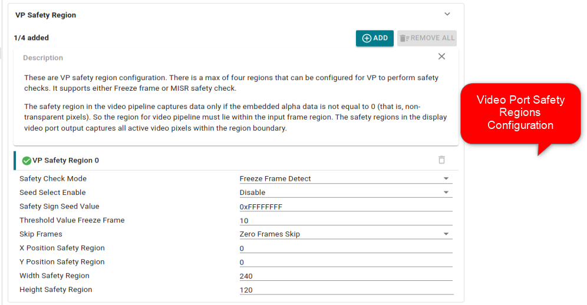
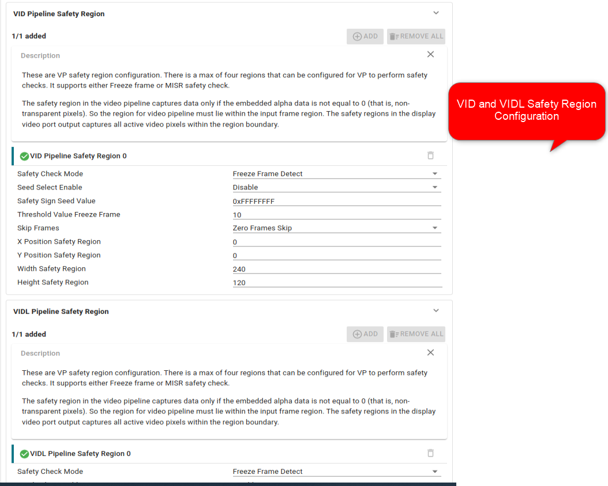

|
AM62Px MCU+ SDK
12.00.00
|
|
|
AM62Px MCU+ SDK
12.00.00
|
|
This example tests the Freeze frame detection and Data integrity check safety features for video pipeline and video port. DSS supports the following safety check regions to implement the safety features:
The safety region in the video pipeline captures data only if the embedded alpha data is not equal to 0 (that is, non-transparent pixels). The safety regions in the display video port output captures all active video pixels within the region boundary. The (up to four) regions in the display output should be typically non-overlapping areas of the screen, but the hardware does not restrict them to be non-overlapping.
The example configures freeze frame detection for two regions and data integrity check for rest of the two regions on Video port. The example also configures data integrity check for VIDL piepline. The data integrity check failure is created by corruting frame buffer so that previous frame buffer is different from current frame buffer.
Safety region configurations are available as part of driver sysconfig feature shown below.
Video Port Safety Region

Video Pipeline Safety Region

The example configures OLDI LVDS panel for Video Port 1. Please refer SK-LCD1 for panel details. The Video port timinng parameters are configured with respect to SK-LCD1. Timing parameters can be configured using sysconfig option.
The example integrates bootloading funtionality with SBL on OSPI bootmedia. It also integrates Device manager functionality. The SBL stage 2 thread boots all the cores along with HLOS like Linux. Refer SBL Booting Linux From OSPI for boot flow sequence.
| Parameter | Value |
|---|---|
| CPU + OS | wkup-r5fss0-0 freertos |
| Toolchain | ti-arm-clang |
| Board | am62px-sk |
| Example folder | examples/drivers/dss/dss_safety_test |
${SDK_INSTALL_PATH}/tools/boot/sbl_prebuilt/am62px-sk/default_sbl_ospi_linux_hs_fs.cfg
# 2nd stage bootloader with DM is flashed at 0x80000 or to whatever offset your bootloader is configured for --file=../../examples/drivers/dss/dss_safety_test/am62px-sk/wkup-r5fss0-0_freertos/ti-arm-clang/dss_safety_test.release.appimage.hs_fs --operation=flash --flash-offset=0x80000
default_sbl_ospi_linux_hs_fs.cfg shown above.C:/ti/mcu_plus_sdk and this example and IPC application is built using makefiles, and Linux Appimage is already created, in Windows, cd C:/ti/mcu_plus_sdk/tools/boot
python uart_uniflash.py -p COM13 --cfg=C:/ti/mcu_plus_sdk/tools/boot/sbl_prebuilt/am62px-sk/default_sbl_ospi_linux_hs_fs.cfg
~/ti/mcu_plus_sdk cd ~/ti/mcu_plus_sdk python uart_uniflash.py -p /dev/ttyUSB0 --cfg=~/ti/mcu_plus_sdk/tools/boot/sbl_prebuilt/am62px-sk/default_sbl_ospi_linux_hs_fs.cfg
 1.8.20
1.8.20